- M. S. Aerospace Engineering, 2022
- B. S. Physics, 2018
I'm an aerospace engineer, computational plasma physicist, and computer systems expert. My professional work currently lies in aerospace guidance and navigation technology. My scientific work generally focuses on high-performance fluid and plasma simulations - studying the numerical methods, computational effenciency, and overall accuracy of the resulting data.
My favorite activities are always building, fabricating, and fixing things in general (such as cars, engines, electronics, carpentry, etc). I am also slowly trying to build some interactive notebooks to demonstrate various computational plasma codes I have written: click here to check one out!
Education
Virginia Polytechnic Institute & State
University
(Virginia Tech)
Research experience
My research primarily focused on using the FLASH code to simulate a laser impeding a target film to produce a resulting plasma jet. The overall goal was to validate the effectiveness and accuracy of the FLASH code and available Equation of State tables against experimental data. Although this was the primary focus for myself, my group unanimously had a strong focus on high-performance numerical methods and programming.
Utilizing the Julia programming language to develop easy to read, robust, and extremely high-performance computational models
Computational modeling and validation of an improved estimate of the cross section for inverse beta decay
Using multi-physics computational models to study spacecraft propulsion and fusion energy concepts
Using the FLASH radiation hydrodynamics code base to study laser-driven plasma jet physics
Verification and validation of the FLASH code against other experimental and simulation data
Developing and programming high-performance computational fluid and plasma simulations
Verification and Validation of Alfvén Wave Propogation in the plasma column of a Z-pinch
Utilizing many different mathematical methods to solve partial differential equations
Reduced-order modeling of fluid simulations to drastically reduce computation time
Using the Gkeyll code to study plasma sheath physics and the Weibel Instability
Parallelized, distributed, and GPU accelerated programming
Relevant Studies
Computational Fluid Dynamics, Computational Plasma Dynamics, Plasma Physics, Electrodynamics, General Relativity, Statistical Mechanics, Thermodynamics, Verification and Validation of Scientific Computing, Numerical Analysis (Finite Element and Finite Volume Methods), Functional Analysis, Principle Component Analysis, Technical Writing, and Nuclear and Particle Physics
Computer Skills


Julia, C/C++, Python, FORTRAN, MATLAB, Wolfram Mathematica, Linux, Powershell and Bash scripting, LATEX, Git, Docker, HPE/Clustering, MPI, CUDA, Jira/Atlassian, CAD, Java
Work Experience
Needing an income for food, housing, and tuition, I paid my way through both undergrad and grad school by working with computers - excelling at high performance systems, technical documentation, and user support. Being deeply invested in the following roles gave me invaluable experiences and expertise.
NTA, Inc. - Aerospace Engineer - October 2023-Present
Evaluating new and state-of-the-art navigation technology for aerospace systems
 Torc Robotics – Computer System Specialist – October
2021-June 2023
Torc Robotics – Computer System Specialist – October
2021-June 2023
Developing and supporting computer systems that power autonomous drive systems and simulations
Working with a wide variety of engineering teams to find solutions to difficult problems and limitations
Software development: building software integrations, APIs, and databases for numerous systems
Troubleshooting computer, network, server, cluster, and security incidents
Logistics and interdepartmental collaborations
Technical writing and process documentation
System architect and administrator
Virginia Tech Office of VP for Finance – Computer Support Specialist – June 2018-May 2021
Web Development: Building and managing departmental webpages, databases, and documentation
Troubleshooting computer, network, server, and security issues
Logistics and interdepartmental relations
System Administrator
Virginia Tech Biocomplexity Institute – Expert Technician – February 2018-June 2018
Troubleshooting computer, network, server, cluster, and security issues
Assissting in the design and assembly of a supercomputing cluster
Virginia Tech Division of IT – Level III Expert Technician – July 2014-June 2018
Developing training curriculum, processes, and documentation for both students, staff, and faculty across the university
Web Development: Building and managing departmental webpages, databases, and documentation
Serving as top-tier support staff to aid and guide others through problem differential and diagnosis
Training, organizing, and managing other IT Helpdesk employees
Troubleshooting computer, network, server, and security issues
Logistics and university-wide interdepartmental relations
Public outreach and communications
Volunteer Experience
Montgomery County Animal Care and Adoption Center
Friends of Animal Care and Control (FACC)
Provider of enrichment and exercise for homeless and at-risk pets in the local community
Assist with risk assessment and behavioral training, as well as training new volunteers
Organizing adoptions, events, and fundraisers